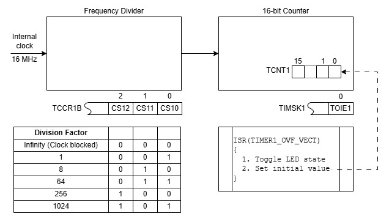
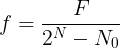
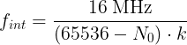
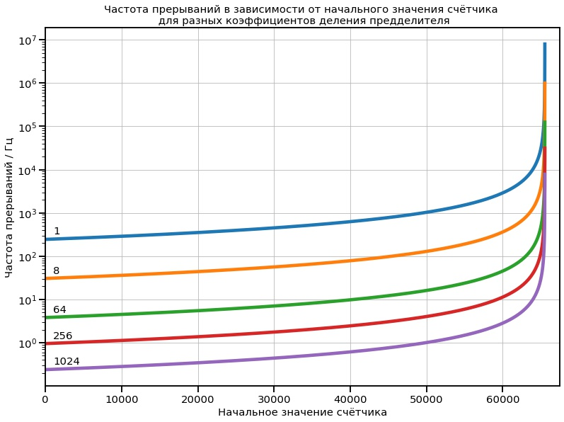
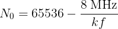

В предыдущем этюде разобран простейший способ мигания светодиодом с использованием таймера. Он иллюстрирует принцип, но на практике малополезен из-за очень небольшого количества частот, которые можно получить. Здесь исследуется приём, который с минимальными изменениями в программе позволяет расширить набор частот и получить разнообразные полезные частоты — 1 Гц, 100 Гц, 20 кГц и т.п.
В упрощённой модели таймера из предыдущего этюда счётчик, по сути, использовался просто как делитель частоты входного сигнала на 216, то есть всегда считал от 0, досчитывал до 65535 и сбрасывался. Однако у счётчика есть текущее значение, увеличивающееся с каждым новым входным импульсом, и его можно прочитать. Также можно записать в счётчик произвольное значение в диапазоне 0-65535 и начать счёт с него. Значение считывается из и записывается в 16-разрядный регистр TCNT1.
Если перед началом счёта записать в счётчик начальное значение N0, то переполнение произойдёт не через 216 тактов входного сигнала, а через 216-N0. Это даёт дополнительную степень свободы при формировании сигнала с заданной частотой: менять частоту можно не только грубо, изменением коэффициента деления входного делителя, но и тоньше — изменением начального значения счётчика. Надо лишь после каждого переполнения заново записывать это значение в счётчик.
На чертеже показана конфигурация, использующая Таймер 1 с учётом сказанного. Внутренний тактовый сигнал 16 МГц поступает на вход делителя частоты, коэффициент деления которого задаётся тремя младшими битами регистра TCCR1B. Выходной сигнал делителя поступает на вход 16-разрядного счётчика, в регистр TCNT1 которого записано начальное значение N0. Счётчик считает поступившие на его вход перепады, и каждый раз, когда досчитывает до 65535 и переполняется, (1) сбрасывается; и (2) генерирует прерывание по переполнению, если это разрешено битом TOIE1 в регистре TIMSK1. Получив запрос прерывания, микроконтроллер выполняет программу обслуживания прерывания (Interrupt Service Routine) ISR(TIMER1_OVF_VECT), в которой управляет светодиодом и записывает N0 в счётчик.

Мигать встроенным светодиодом по прерыванию от Таймера 1 с возможностью управления частотой мигания посредством изменения коэффициента деления входного делителя и/или начального значения счётчика.
Легко показать, что N-разрядный счётчик с начальным состоянием N0 при поступлении в него импульсов с частотой F будет переполняться с частотой f, даваемой выражением:

В рассмотренной выше конфигурации частота прерываний:

(N0 — начальное значение, k — коэффициент деления). Зависимость частоты прерыаний от начального значения при разных коэффициентах деления показана на графике:

Программа обслуживания прерывания при каждом вызове считывает бит 5 из PORTB и записывает обратно его инвертированное значение, соответственно, при каждом прерывании светодиод либо зажигается, либо гаснет, и результирующая частота мигания вдвое ниже частоты прерываний.
В этом этюде предусмотрена возможность установки коэффициента деления (команда d=двоичное значение трех младших битов TCCR1B, например, d=100) и начального значения счётчика (команда c=десятичное начальное значение счётчика, например, c=3036, максимальное значение 65535). Команды вводятся в мониторе последовательного порта в Arduino IDE. Значение N0 для заданной частоты f мигания при выбранном коэффициенте k деления можно рассчитать по формуле:

.Предположим, что требуется получить частоту мигания 1/2 Гц (ей соответствует длительность свечения и длительность паузы 1 с). Частота прерываний для этого случая 1 Гц. Из графика видно, что получить такую частоту можно при коэффициенте деления 256 или 1024. Расчёт даёт N0=3036 при k=256 и N0=49911 при k=1024.
Следует понимать, что линии на вышеприведённом графике лишь выглядят сплошными, а на деле представляют собой множество изолированных точек, поэтому не для всякой заданной частоты прерываний или частоты мигания существует значение N0. Формальный расчёт возможен для любой частоты, но результат может не оказаться целым положительным числом, что означает невозможность получить заданную частоту в описанной конфигурации (частоту f можно получить только тогда, когда произведение kf является делителем числа 8 миллионов). Например, невозможно получить частоту 32768 Гц.
В этой таблице приведены начальные значения N0 для получения некоторых частот — например, целых, заканчивающихся на 0 и на 5; они получены формальным расчётом, фактическая частота меньше, но расхождение становится значимым только на частотах выше нескольких килогерц (подробности далее).
Если измерять период сигнала на пине 13 Ардуино, постепенно повышая частоту, то можно заметить, что начиная приблизительно с 10 кГц измеренный период начинает значимо отличаться от ожидаемого, соответствующего заданной частоте, — измеренный больше ожидаемого на 3,2-3,9 мкс. В результате, например, при заданной частоте 50 кГц на выходе около 43 кГц, а при 500 кГц — 171 кГц. Максимально возможная частота поэтому ограничивается указанной прибавкой и составляет около 1/(4 мкс) = 250 кГц. Эта прибавка — время, которое уходит на обработку прерывания.
Взаимодействие пользователя с программой в этом цикле этюдов происходит, как правило, вводом команд вида параметр=значение в терминале (Serial Monitor в Arduino IDE). В этом этюде введена и в последующих этюдах будет развиваться минималистичная справка о программе и поддерживаемых ей командах. Команда ?= выведет общую информацию о программе и командах. Команда ?=команда выведет конкретную информацию о команде. Например, в этом этюде ответ на команду ?= указывает на поддержку команд d и c. Об этих командах и их параметрах можно узнать, соответственно, по команде ?=d и ?=c.
Текст программы содержится в файле Ind_y_Ardu.ino, который можно получить с Github по ссылке.
Файл Jupyter Notebook с кодом на python для расчёта частот и построения вышеприведённого графика 083_Freqs.ipynb доступен с Github по ссылке.
Как вариант, для получения файла можно взять с Github весь репозиторий цикла "Ардуино и индикаторы" и выполнить соответствующую команду:
git restore -s builtin22 -- Ind_y_Ardu.ino
git restore -s builtin22 -- ipynbs/083_Freqs.ipynb
Соответствующие файлы в рабочей области будут перезаписаны требуемой версией.